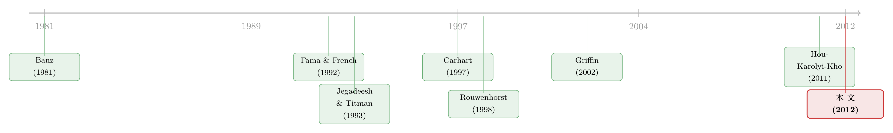

全世界都有「价值」和「动量」，只有日本是个例外
本文读的是 Fama and French (2012, Journal of Financial Economics)：在北美、欧洲、日本、亚太四个地区，价值溢价几乎无处不在、且越往小盘股越大；除日本外动量也无处不在、同样在小盘股里更强；但用全球因子去解释各地区收益几乎全军覆没，连本地化的四因子模型也只能「勉强及格」——尤其管不住动量。一句话：因子是全球性的现象，定价却远谈不上全球一体。
1 一个让人不安的问题
先讲一个很多人没太较真过的事实。
我们对 三因子模型 (three-factor model) 和 四因子模型 (four-factor model) 的信仰，几乎全部建立在一个国家的数据上——美国。SMB、HML、WML 这些今天写进每一篇实证论文脚注里的因子，最初都是在 CRSP/Compustat 的美股样本里「长」出来的。于是一个自然的问题是：这些规律，到底是资本市场的普遍性质，还是只是美国这一个样本被反复挖掘出来的产物？
如果价值溢价、动量这些东西只在美国成立，那它们更像是 数据窥探 (data snooping) 的副产品；如果它们在世界各地都成立，那才配得上「风险因子」这个称号。更进一步，还有一个更深的问题藏在后面：就算这些现象到处都有，资产定价是不是「全球一体」的？ 也就是说，能不能用一套全球因子，统一地给世界上所有股票定价？
这正是 Fama 和 French 在 2012 年这篇文章里想回答的两件事。读这篇论文的乐趣，恰恰在于这两位「因子模型之父」亲自下场，去检验自己一手缔造的工具在出了美国国门之后到底还灵不灵——而结论，比你想象的要谦逊得多。
（关于「全球溢价是否真实」这个更宏大的追问，可参见《把因子拖回 1800 年：一场对 p-hacking 的两百年审判》。）
2 把世界切成四块
要检验「国际」，第一步是定义「国际」。
Fama-French 的做法很务实。他们用了 23 个发达国家、Bloomberg 为主（辅以 Datastream 和 Worldscope）的数据，样本从 1989 年 11 月开始——之所以选这个偏晚的起点，是为了让 23 个国家都有足够宽的覆盖。第一年要用来构造动量的滞后收益，所以真正进入检验的样本是 1990 年 11 月到 2011 年 3 月，共 245 个月（文中称「1991–2010」）。所有收益都换算成美元，超额收益是相对一个月期美国国债利率。
为什么不一国一国地做？因为单个小国的股票太少，左手边（被解释）的组合会很「噪」，回归拟合差、截距估计不精确——而这篇文章所有的检验，焦点都在 截距 (intercept) 是否为零。于是他们把 23 国并成四个地区，既保证每个组合里股票够多，又让「市场一体化」这个假设大体说得过去：
- 北美 (North America)：美国 + 加拿大；
- 欧洲 (Europe)：以欧盟国家为主（含瑞士等）；
- 日本 (Japan)：单独成区；
- 亚太 (Asia Pacific)：澳、新、香港、新加坡（不含日本）。
这四块的体量很悬殊：平均而言，北美、欧洲、日本、亚太分别占全球市值的 47.3%、30.0%、18.4%、4.3%。亚太那 4.3% 后面会成为麻烦的源头。
一个容易被忽略的细节：他们刻意用「大盘股」来定 B/M 和动量的分位断点，用「市值占比」来定规模断点，就是为了不让数量庞大但无足轻重的微型股 (microcaps) 主导排序——这是 Fama-French (1993) 当年用 NYSE 断点的同一套思路在国际场景的复刻。
接着是构造因子。在每个地区，他们做 2×3 的「规模 × B/M」独立排序，得到 SG、SN、SV、BG、BN、BV 六个组合（S/B 是小/大，G/N/V 是成长/中性/价值，按 B/M 的底 30%、中 40%、顶 30% 切）。由此：
SMB= 三个小盘组合均值 − 三个大盘组合均值；HML_S = SV − SG、HML_B = BV − BG，HML是两者的等权平均；- 动量那边类似，
2×3的「规模 × 动量」排序（动量用 \(t-11\) 到 \(t-1\) 的累计收益，跳过当月），得到WML_S、WML_B和WML。
把 HML_S − HML_B 和 WML_S − WML_B 单拎出来，就能直接看「溢价是否随规模变化」——这恰恰是本文相对前人的核心增量。
3 描述性事实：价值无处不在，动量独缺日本
在跑任何模型之前，仅仅是这张「描述性统计」表（论文 Table 1），就已经讲出了大半个故事。我们一项项看。
规模溢价：消失了。 四个地区的平均 SMB 收益全都贴近零。这个样本期里，小盘股并不系统性地跑赢大盘股。所以别误会——这篇文章标题里的 "Size" 不是说有规模溢价，而是说所有结论都要按规模分组去看。
价值溢价：到处都有。 平均 HML 收益从北美的 0.33%/月（t=1.48）到亚太的 0.62%/月（t=3.04），无一为负。全球 HML 是 0.45%/月（t=2.85）。
但真正关键的一步在于：价值溢价越往小盘股越大。 全球小盘价值溢价 HML_S = 0.66%（t=3.78），大盘只有 HML_B = 0.24%（t=1.36），两者之差 0.42% 离零有 2.76 个标准误。北美、欧洲、亚太都是这个模式。
这里有个对前作的「打脸」。Fama and French (2006) 曾说价值溢价不随规模变化，但那篇的样本在小盘股上太单薄。这篇覆盖更全的样本表明：小盘股的价值溢价更大，才是常态。 自己修正自己，正是 Fama-French 的一贯风格。
动量：除日本外无处不在。 其他三区的平均 WML 从北美的 0.64%/月（t=1.91）到欧洲的 0.92%/月（t=3.38）。全球 WML 是 0.62%/月（t=2.30），而且同样是小盘更强：小盘 0.82%（t=3.14）、大盘 0.41%（t=1.38）。
然后，于是反转出现——日本。 日本的动量收益几乎严格为零：WML = 0.08%/月（t=0.25），小盘大盘都说不上有动量。日本还是唯一一个股权溢价为负的地区（−0.12%/月）。一个东西在全世界都成立、唯独在世界第三大市场失灵，这本身就是个谜。
Chui, Titman, and Wei (2010) 给过一个文化解释：动量在崇尚个人主义的文化里更强，日本个人主义得分低，所以没有动量。Fama-French 对此明确表示怀疑——他们说这个逻辑完全可以反过来讲（低个人主义意味着股价对信息反应慢，反而应该有动量），而且更简单的解释是：日本没有动量，可能纯属偶然 (chance)。 他们提到一个未列出的 Hotelling \(T^2\) 检验：「各地区期望 WML 收益相同」这个假设，在 90% 水平上都拒绝不了。换句话说，日本动量为零和别处不为零之间的差异，在统计上未必站得住。这是非常 Fama 式的克制——不轻易给一个尚未被数据逼到墙角的现象编故事。
4 检验的逻辑：不是回归，是「张成」
到这里，描述性事实都摆好了。接下来才是这篇文章方法论上最讲究的地方，也是最容易被读者跳过的地方。
Fama-French 用的是最经典的两个回归。三因子模型：
$$ R_i(t) - RF(t) = a_i + b_i\,[RM(t) - RF(t)] + s_i\,SMB(t) + h_i\,HML(t) + e_i(t) $$
四因子模型在此基础上加一个动量项：
$$ R_i(t) - RF(t) = a_i + b_i\,[RM(t) - RF(t)] + s_i\,SMB(t) + h_i\,HML(t) + w_i\,WML(t) + e_i(t) $$
把这个四因子方程的每一块拆开看，它检验的到底是什么：
为什么死盯着截距 \(a_i\)？因为当我们把回归式 (1) 或 (2) 当成「经验资产定价模型」时，背后的假设就是：右手边那几个解释组合的斜率，已经捕捉了期望收益的横截面，于是真实截距应当为零。
但 Fama-French 在「Motivation」一节里讲了一个比「截距为零」更深刻的等价说法，这也是理解全文的钥匙：如果某组解释组合能让所有资产的截距都为零，那等价于说，这组右手边组合张成 (span) 了由全体资产构造出的事前均值-方差 (mean-variance, MV) 切点组合（Huberman and Kandel, 1987）。
这句话的分量在于：一旦你找到一组能张成 MV 切点组合的解释组合，你就抓住了期望收益的横截面——无论底层真正的定价模型是什么。 经验资产定价不需要先写出消费、效用、生产那一整套结构，它只问一个组合空间的几何问题。
但这里有个陷阱，Fama-French 自己点破了：任何一组资产都有一个切点组合。 如果允许无约束地去搜，经验资产定价就是空洞的——你总能事后凑出一个完美组合。所以必须强加约束，他们选择的约束是简约 (parsimony)：只问「一小撮、事先针对长期收益规律构造的右手边组合，能不能张成切点组合」。简约，才是让这套检验有内容的前提。
检验统计量用的是 GRS 检验（Gibbons, Ross, and Shanken, 1989），它同时检验「一组资产的截距是否联合为零」。
这套「张成」的视角还顺手定义了「定价是否一体化」的含义。假设真实模型是 CAPM 且全球一体化，那么对全球市场组合的 \(\beta\) 应当解释一切资产的收益，而本地版 CAPM 反而不该成立——美国市场组合的 \(\beta\) 不该能解释美国资产。反过来，如果定价并非全球一体，那全球 CAPM 就会失败，哪怕每个本地市场内部各自被本地 CAPM 完美定价。于是，比较「全球因子解释本地收益」与「本地因子解释本地收益」的成败，本身就是在给一体化程度称重。
5 检验之难：功效（power）忽高忽低
讲到这里，必须先讲清一个让这篇文章的结论充满「但是」的技术细节：检验的功效 (power) 极不稳定。
当左手边和右手边的组合来自同一个地区（都本地、或都全球），回归拟合得很紧（\(R^2\) 高），检验通常有功效。代价是，模型实际上在「打主场」：右手边因子和左手边资产都来自同一套排序的粗细版本。即便如此，主场也常常会输——也就是说，模型照样会在某些地区的 size-B/M 或 size-momentum 组合上被拒。
反过来，当右手边是全球因子、左手边是本地资产时，回归拟合松，功效就成了问题。结果就出现了一个尴尬的不对称：
「我们有时拒绝了经济意义上其实工作得相当好的模型；又有时没能拒绝那些明显偏离靶心的全球模型。」
读这篇文章时一定要把这条记在心里，否则会把「没拒绝」误读成「模型很好」。
6 结论：因子是全球的，定价不是
把所有检验汇总，故事落到一个清晰的二分上。
全球模型：解释全球组合还行，解释地区组合，惨败。 撇开微型股，全球四因子模型对全球 size-B/M 和 size-momentum 组合是「passable（勉强及格）」的——Fama-French 说，他们会愿意用全球四因子模型去评价一只持有全球分散组合的基金，只要它没有强烈偏向微型股或某一地区。但一旦让全球模型去解释单个地区的收益，GRS 检验拒绝、平均绝对截距很大，这是「bad, probably damning（糟糕，很可能是致命的）」证据。结论很直接：全球定价一体化在数据里得不到强支持。
本地模型：救场，但也不完美。 全球模型的失败，把门让给了本地模型。对每个地区用本地因子跑本地版三因子/四因子，检验通常有功效，而且对 size-B/M 组合，本地模型表现相当不错——这是真正可用于实务（如评价共同基金）的好消息。一个一致的规律是：只要本地模型在某地区可接受，本地四因子就和三因子持平或更好（动量项确实有边际贡献）。
但动量始终是软肋。 本地模型在 size-momentum 组合上明显更吃力，尤其欧洲和亚太的动量组合，连本地模型都搞不定。不过 Fama-French 给了个安慰：模型在动量上的失败，主要集中在极端组合（极端偏向赢家或输家的那些角落），而真实世界的组合——比如共同基金——很少会有那么极端的动量倾斜。所以在多数应用里，这个缺陷未必要紧。
把三句话拼起来：价值与动量是全球普遍的经验现象（标题里的 "Value" 和 "Momentum"），但能统一定价它们的「全球模型」并不存在；定价是分块的、本地的。 这才是这篇文章真正的贡献——它不是在宣告因子的胜利，而是在给「全球一体化」泼了一盆冷水。
别忘了一个被全文「假设掉」的东西：和 Fama and French (1998)、Griffin (2002) 等人一样，本文所有检验忽略了汇率风险 (exchange rate risk)——这等价于假设要么完全购买力平价成立，要么这些资产无法对冲汇率风险。这是推断里一个实打实的潜在隐患。
7 文献脉络
把这篇文章放回它所在的那条线上，叙事其实很清楚。
最早的两块基石都是单一异象的发现：Banz (1981) 发现小市值股票平均收益更高（规模效应）；De Bondt and Thaler (1985)、Lakonishok, Shleifer, and Vishny (1994) 以及 Fama and French (1992) 把价值效应钉在了地上。动量则来自 Jegadeesh and Titman (1993)——过去一年的赢家会继续赢。
接着是「打包」。Fama and French (1993) 用 SMB 和 HML 把规模和价值装进三因子模型；Carhart (1997) 再补一个 WML，凑成今天最常用的四因子模型。这套工具几乎定义了之后二十年的实证资产定价。

然后，一个自然的问题是：出了美国，这些还成立吗？国际化这条支线由 Chan, Hamao, and Lakonishok (1991)、Fama and French (1998)、Rouwenhorst (1998) 等人铺开，证明价值和动量在国际市场也观察得到。再往后，Griffin (2002) 专门检验了 Fama-French 因子「是全球的还是国别的」，结论偏向国别版本更好；Hou, Karolyi, and Kho (2011) 则系统地问「什么因子驱动全球收益」。
这篇 Fama and French (2012) 站在这条线的交汇点上，它的增量很具体：前人多聚焦大盘股，本文覆盖所有规模组、把溢价按规模分组来看（于是看到了「小盘股溢价更大」和「微型股的麻烦」），并系统地比较了全球模型与本地模型——这恰恰是 Griffin、Hou-Karolyi-Kho 没有做透的部分。
至于这条「因子动物园」后来如何收场、如何被收缩与重新评判，那是另一个故事了（可参见《压缩横截面：因子动物园的尽头，不是更少的因子，而是更聪明的收缩》，以及对「贴现率/期望收益」这一中心议题的总览《贴现率：资产定价的中心议题》）。
8 评论与延伸（Q&A + 研究方向）
(a) 几个可能的疑问
Q：标题里有 "Size"，可文章说规模溢价消失了，那 "Size" 到底指什么？
指的是「按规模分组看」，不是「规模溢价」。平均
SMB在四个地区都接近零，所以小盘大盘本身没系统性差异；但价值溢价和动量溢价都随规模显著变化（小盘更强），这种「沿规模的异质性」才是本文的核心发现，也是它相对只看大盘股的前人的增量。
Q：日本到底有没有动量？文化解释靠谱吗？
数据上日本动量几乎为零（
WML = 0.08%，t=0.25）。但 Fama-French 不接受 Chui-Titman-Wei 的个人主义文化解释，理由有二：一是这套逻辑可以反着讲；二是 Hotelling \(T^2\) 检验在 90% 水平上拒绝不了「各地区动量相同」，所以日本的「无动量」很可能只是偶然。这是个识别力不足、而非机制清楚的结论。
Q：「截距为零」和「张成切点组合」是一回事吗？
是等价的。若一组解释组合能让所有资产的截距联合为零，根据 Huberman-Kandel (1987)，等价于这组组合张成了全体资产的事前 MV 切点组合。这也是为什么 Fama-French 反复强调「简约」约束——没有约束的话，任何资产集都有切点组合，检验就空了。
Q：全球模型对全球组合「及格」、对地区组合「惨败」，这矛盾吗？
不矛盾，关键在功效。全球因子配全球资产拟合紧、检验有功效但模型还能及格；全球因子配地区资产拟合松，功效低，所以「没拒绝」也读不出「模型好」，而真正拒绝时（截距大）说明问题严重。两个层面合起来才指向「定价非全球一体」。
Q：为什么本地四因子在 size-B/M 上行、在 size-momentum 上不行？
因为动量的难点集中在极端赢家/输家组合，那里模型的截距偏离最大。size-B/M 组合的极端倾斜没那么剧烈，本地模型就能管住。Fama-French 认为这在实务中影响有限，因为真实基金极少有那么极端的动量暴露。
Q：忽略汇率风险会不会推翻结论？
这是公开承认的隐患。所有收益换成美元、且不建模汇率风险，等于假设购买力平价或资产不能对冲汇率风险。若汇率风险被定价且与地区因子相关，「全球模型失败」里可能混入了「漏掉汇率因子」的成分——这正是后续工作可以切入的缝隙。
(b) 几个可能的研究问题与提案
1. 把汇率风险作为第五个因子重做这套检验。
【经济故事】本文把汇率风险假设掉了，但 Dumas-Solnik (1995)、Zhang (2006) 都表明它可能被定价。如果「全球模型解释地区收益失败」其实部分源于漏掉了汇率因子，那「定价非一体化」的结论就要打折。 【可行性】中。数据可得（汇率、各国无风险利率都公开），识别上可在 (2) 式右侧加入一个共同的美元/篮子汇率因子，比较加入前后地区截距的变化。难点是汇率因子构造方式众多，需稳健性。
2. 把「四地区」拆细到国别，重估一体化梯度。
【经济故事】本文为了功效把 23 国并成 4 区，但一体化程度本应是连续的（欧盟内 > 欧盟与亚太之间）。能否构造一条「一体化梯度」，看截距如何随地理/制度距离单调变化？ 【可行性】中。数据同源，但单国组合噪声大、功效低——这正是 Fama-French 当初合并的原因。可用收缩估计或贝叶斯方法缓解，doable 但结论会偏弱。
3. 把这套「张成 + GRS」的框架搬到公司债/信用市场。
【经济故事】股票里「因子全球、定价分块」的结论，在国际公司债市场是否成立？信用市场分割程度（评级、监管、货币）往往比股票更强，预期会看到更弱的一体化。 【可行性】中偏低。难点在国际公司债的成交与定价数据稀疏、流动性差异大；需先解决流动性度量（这本身是个独立课题）。识别上可复用本文的本地 vs. 全球因子对照。
4. 重做日本动量之谜，用更长样本和事件研究检验「偶然 vs. 机制」。
【经济故事】Fama-French 说日本无动量可能是偶然，但样本只有 20 年。若把样本延长到 2020 年代，日本动量是否仍为零？若是，「偶然」说就站不住，需要回到机制（如散户结构、企业交叉持股）。 【可行性】高。日本长样本数据可得，识别直接：在更长窗口里重估
WML及其 \(t\) 值，并用滚动窗口看其稳定性。是最容易上手的一个方向。
5. 微型股的「反向规模效应」从何而来？
【经济故事】本文发现极端成长股里，小盘反而比大盘收益低（反向规模效应），这与流动性、做市成本、卖空约束都可能有关。这块「角落」恰恰是模型截距最大的地方。 【可行性】中。需要个股层面的流动性与交易成本数据（国际微型股较难获取），识别上可看反向规模效应是否随流动性指标系统性变化。
9 我的判断
这篇文章的贡献不在于「发现了新因子」，恰恰相反——它的价值在于克制与诚实。两位因子模型的缔造者，亲手把自己的工具拉到 23 个国家的数据上去检验，得到的结论是「因子现象是全球的，但全球定价模型并不成立，连本地模型也只是勉强够用」。这种愿意报告「我们的模型在主场也常常输」的姿态，在今天动辄宣称「找到新 alpha」的实证文献里，反而稀缺。
对识别，我最大的保留有两点。其一是汇率风险被整体假设掉，而这恰恰可能是「全球模型失败」的一部分来源——这是结构性的、而非小瑕疵。其二是功效的不对称让很多结论难以解读：「没拒绝全球模型」更多是检验没劲，而非模型好；反过来「拒绝本地模型」有时又是主场拟合太紧导致的吹毛求疵。读者很容易在这两类「拒绝/不拒绝」之间被误导，而文章本身对此是坦白的。
后续我最想看到的，是把汇率因子显式纳入、并把这套「张成」框架延伸到信用市场和外资持有人结构上去——当一个市场里外资占比很高时，它的定价是更接近「全球」还是更接近「本地」？这或许才是「一体化」这个问题真正有政策含义的地方。
参考文献
Banz, R.W. (1981). The relationship between return and market value of common stocks. Journal of Financial Economics 9, 3–18.
Carhart, M.M. (1997). On persistence in mutual fund performance. Journal of Finance 52, 57–82.
Chan, L.K.C., Hamao, Y., Lakonishok, J. (1991). Fundamentals and stock returns in Japan. Journal of Finance 46, 1739–1764.
Chui, A.C.W., Titman, S., Wei, K.C.J. (2010). Individualism and momentum around the world. Journal of Finance 65, 361–392.
De Bondt, W.F.M., Thaler, R.H. (1985). Does the stock market overreact? Journal of Finance 40, 793–805.
Dumas, B., Solnik, B. (1995). The world price of foreign exchange risk. Journal of Finance 50, 445–479.
Fama, E.F., French, K.R. (1992). The cross-section of expected stock returns. Journal of Finance 47, 427–465.
Fama, E.F., French, K.R. (1993). Common risk factors in the returns on stocks and bonds. Journal of Financial Economics 33, 3–56.
Fama, E.F., French, K.R. (1998). Value versus growth: the international evidence. Journal of Finance 53, 1975–1999.
Fama, E.F., French, K.R. (2006). The value premium and the CAPM. Journal of Finance 61, 2163–2186.
Gibbons, M.R., Ross, S.A., Shanken, J. (1989). A test of the efficiency of a given portfolio. Econometrica 57, 1121–1152.
Griffin, J.M. (2002). Are the Fama and French factors global or country specific? Review of Financial Studies 15, 783–803.
Hou, K., Karolyi, G.A., Kho, B.C. (2011). What factors drive global stock returns? Review of Financial Studies 24, 2527–2574.
Huberman, G., Kandel, S. (1987). Mean-variance spanning. Journal of Finance 42, 873–888.
Jegadeesh, N., Titman, S. (1993). Returns to buying winners and selling losers: implications for stock market efficiency. Journal of Finance 48, 65–91.
Lakonishok, J., Shleifer, A., Vishny, R.W. (1994). Contrarian investment, extrapolation, and risk. Journal of Finance 49, 1541–1578.
Rouwenhorst, K.G. (1998). International momentum strategies. Journal of Finance 53, 267–284.
Zhang, X. (2006). Specification tests of international asset pricing models. Journal of International Money and Finance 25, 275–307.